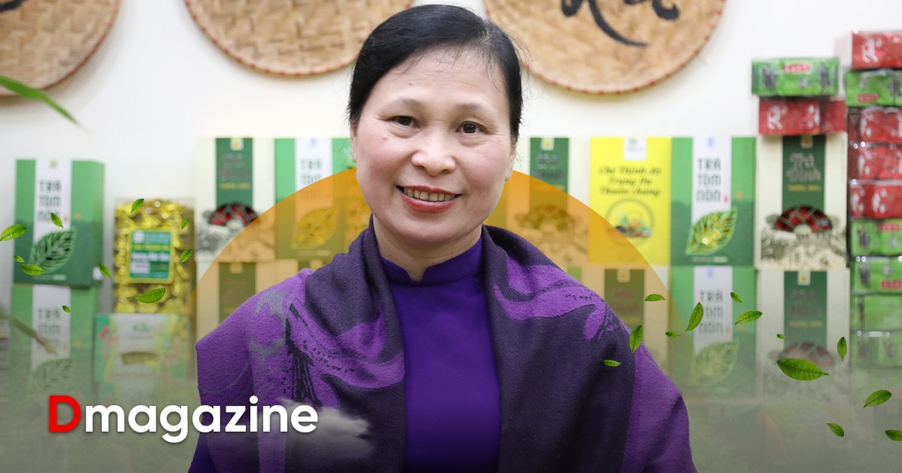

Trang chủ / Huyền Trà Xưa
Người kể chuyện tràHuyền Trà Xưa
Một hành trình từ tình yêu cây chè quê hương đến khát vọng đưa văn hóa trà Việt trở thành trải nghiệm sống động, gần gũi và có giá trị cho cộng đồng.

Ảnh nguồn
Dân trí
Dân trí
Vũ Thị Thương HuyềnMang hồn quê
Mang hồn quê
vào từng phẩm trà
Qua các bài viết của Nhân Dân, Dân trí, Công Thương và Thái Nguyên Hằng tháng, bà Huyền được giới thiệu là nghệ nhân văn hóa trà, người gắn với dự án Chè Thịnh An và hoạt động kết nối sản phẩm OCOP với khách hàng.
Giữ nghề không chỉ bằng cách làm ra trà ngon, mà còn bằng cách giúp thế hệ sau hiểu vì sao chén trà ấy đáng quý.
Ảnh được sử dụng trong bản localhost với mục đích trình bày tư liệu báo chí và ghi nguồn. Cần xin quyền sử dụng trước khi xuất bản thương mại.
Xem bài và ảnh gốc tại Dân trí →Ba lớp giá trị
Trà · Người · Văn hóa
Trà
Đa dạng hóa sản phẩm để truyền thống hiện diện trong nhịp sống mới.
Người
Kết nối người làm chè, đối tác và khách hàng quanh một chuỗi giá trị sẻ chia.
Văn hóa
Biến hành trình hái–sao–pha–thưởng thành một trải nghiệm có câu chuyện.
Báo chí kể
Vào Trà Đàm →